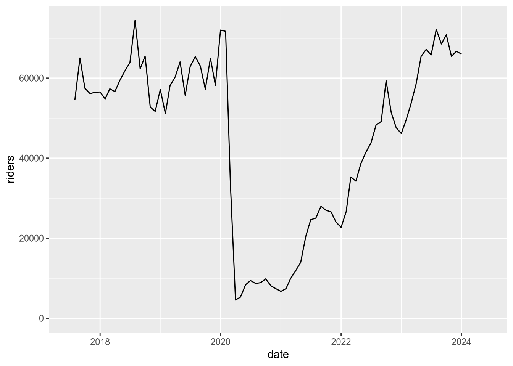

# install.packages("tidyr")
library(tidyr)20 Reshaping Data
NoteLearning Goals
After this lesson, you should be able to:
- Use the tidyr package to reshape data
This section explains how to reshape tabular datasets into tidy datasets. While reshaping can seem tricky at first, making sure your dataset has the right structure before you begin analysis saves time and frustration in the long run.
20.1 The tidyr Package
The tidyr package provides functions to reshape tabular datasets. It also provides examples of tidy and untidy datasets. Like most Tidyverse packages, it comes with detailed documentation and a cheatsheet.
As usual, install the package if you haven’t already, and then load it:
Let’s start with an example of a tidy dataset. The table1 dataset in the package records the number of tuberculosis cases across several different countries and years:
table1# A tibble: 6 × 4
country year cases population
<chr> <dbl> <dbl> <dbl>
1 Afghanistan 1999 745 19987071
2 Afghanistan 2000 2666 20595360
3 Brazil 1999 37737 172006362
4 Brazil 2000 80488 174504898
5 China 1999 212258 1272915272
6 China 2000 213766 1280428583Each of the four columns contains a single kind of measurement or identifier, so the dataset satifies tidy rule 1. The measurements were taken at the country-year level, and each row contains data for one country-year pair, so the dataset also satisfies tidy rule 2. Each cell in the data frame only contains one value, so the dataset also satisfies tidy rule 3.
The same data are recorded in table2, table3, and the pair table4a with table4b, but these are all untidy datasets. For example, table2 breaks rule 1 because the column count contains two different kinds of measurements—case counts and population counts:
table2# A tibble: 12 × 4
country year type count
<chr> <dbl> <chr> <dbl>
1 Afghanistan 1999 cases 745
2 Afghanistan 1999 population 19987071
3 Afghanistan 2000 cases 2666
4 Afghanistan 2000 population 20595360
5 Brazil 1999 cases 37737
6 Brazil 1999 population 172006362
7 Brazil 2000 cases 80488
8 Brazil 2000 population 174504898
9 China 1999 cases 212258
10 China 1999 population 1272915272
11 China 2000 cases 213766
12 China 2000 population 1280428583When considering whether you should reshape a dataset, think about what the features are and what the observations are. These depend on the dataset itself, but also on what kinds of analyses you want to do. Datasets sometimes have closely related features or multiple (nested) levels of observation. The tidyr documentation includes a detailed article on how to reason about reshaping datasets.
If you do decide to reshape a dataset, then you should also think about what role each feature serves:
Identifiers are labels that distinguish observations from one another. They are often but not always categorical. Examples include names or identification numbers, treatment groups, and dates or times. In the tuberculosis data set, the
countryandyearcolumns are identifiers.Measurements are the values collected for each observation and typically the values of research interest. For the tuberculosis data set, the
casesandpopulationcolumns are measurements.
Having a clear understanding of which features are identifiers and which are measurements makes it easier to use the tidyr functions.
20.2 Rows into Columns
Tidy data rule 1 is that each column must be a single feature. The table2 dataset breaks this rule:
table2# A tibble: 12 × 4
country year type count
<chr> <dbl> <chr> <dbl>
1 Afghanistan 1999 cases 745
2 Afghanistan 1999 population 19987071
3 Afghanistan 2000 cases 2666
4 Afghanistan 2000 population 20595360
5 Brazil 1999 cases 37737
6 Brazil 1999 population 172006362
7 Brazil 2000 cases 80488
8 Brazil 2000 population 174504898
9 China 1999 cases 212258
10 China 1999 population 1272915272
11 China 2000 cases 213766
12 China 2000 population 1280428583To make the dataset tidy, the measurements in the count column need to be separated into two separate columns, cases and population, based on the categories in the type column.
You can use the pivot_wider function to pivot the single count column into two columns according to the type column. This makes the dataset wider, hence the name pivot_wider.
The function’s first parameter is the dataset to pivot. Other important parameters are:
values_from– The column(s) to pivot.names_from– The column that contains names for the new columns.id_cols– The identifier columns, which are not pivoted. This defaults to all columns except those invalues_fromandnames_from.
Here’s how to use the function to make table2 tidy:
pivot_wider(table2, values_from = count, names_from = type)# A tibble: 6 × 4
country year cases population
<chr> <dbl> <dbl> <dbl>
1 Afghanistan 1999 745 19987071
2 Afghanistan 2000 2666 20595360
3 Brazil 1999 37737 172006362
4 Brazil 2000 80488 174504898
5 China 1999 212258 1272915272
6 China 2000 213766 1280428583The function automatically removes values from the country and year columns as needed to maintain their original correspondence with the pivoted values.
20.3 Columns into Rows
Tidy data rule 2 is that every row must be a single observation. The table4a and table4b datasets break this rule because each row in each dataset contains measurements for two different years:
table4a# A tibble: 3 × 3
country `1999` `2000`
<chr> <dbl> <dbl>
1 Afghanistan 745 2666
2 Brazil 37737 80488
3 China 212258 213766table4b# A tibble: 3 × 3
country `1999` `2000`
<chr> <dbl> <dbl>
1 Afghanistan 19987071 20595360
2 Brazil 172006362 174504898
3 China 1272915272 1280428583The tuberculosis case counts are in table4a. The population counts are in table4b. Neither is tidy.
To make the table4a dataset tidy, the 1999 and 2000 columns need to be pivoted into two new columns: one for the measurements (the counts) and one for the identifiers (the years). It might help to visualize this as stacking the two separate columns 1999 and 2000 together, one on top of the other, and then adding a second column with the appropriate years. The same process makes table4b tidy.
You can use the pivot_longer function to pivot the two columns 1999 and 2000 into a column of counts and a column of years. This makes the dataset longer, hence the name pivot_longer.
Again the function’s first parameter is the dataset to pivot. Other important parameters are:
cols– The columns to pivot.values_to– Name(s) for the new measurement column(s)names_to– Name(s) for the new identifier column(s)
Here’s how to use the function to make table4a tidy:
tidy4a = pivot_longer(table4a, -country, values_to = "cases",
names_to = "year")
tidy4a# A tibble: 6 × 3
country year cases
<chr> <chr> <dbl>
1 Afghanistan 1999 745
2 Afghanistan 2000 2666
3 Brazil 1999 37737
4 Brazil 2000 80488
5 China 1999 212258
6 China 2000 213766In this case, the cols parameter is set to all columns except the country column, because the country column does not need to be pivoted. The function automatically repeats values in the country column as needed to maintain its original correspondence with the pivoted values.
Here’s the same for table4b:
tidy4b = pivot_longer(table4b, -country, values_to = "population",
names_to = "year")
tidy4b# A tibble: 6 × 3
country year population
<chr> <chr> <dbl>
1 Afghanistan 1999 19987071
2 Afghanistan 2000 20595360
3 Brazil 1999 172006362
4 Brazil 2000 174504898
5 China 1999 1272915272
6 China 2000 1280428583Once the two datasets are tidy, you can join them with the merge function to reproduce table1:
merge(tidy4a, tidy4b) country year cases population
1 Afghanistan 1999 745 19987071
2 Afghanistan 2000 2666 20595360
3 Brazil 1999 37737 172006362
4 Brazil 2000 80488 174504898
5 China 1999 212258 1272915272
6 China 2000 213766 128042858320.4 Separating Values
Tidy data rule 3 says each value must have its own cell. The table3 dataset breaks this rule because the rate column contains two values per cell:
table3# A tibble: 6 × 3
country year rate
<chr> <dbl> <chr>
1 Afghanistan 1999 745/19987071
2 Afghanistan 2000 2666/20595360
3 Brazil 1999 37737/172006362
4 Brazil 2000 80488/174504898
5 China 1999 212258/1272915272
6 China 2000 213766/1280428583The two values separated by / in the rate column are the tuberculosis case count and the population count.
To make this dataset tidy, the rate column needs to be split into two columns, cases and population. The values in the rate column are strings, so one way to do this is with the stringr package’s str_split_fixed function, described in Section @ref(splitting-strings):
library(stringr)
# Split the rate column into 2 columns.
cols = str_split_fixed(table3$rate, fixed("/"), 2)
# Remove the rate column and append the 2 new columns.
tidy3 = table3[-3]
tidy3$cases = as.numeric(cols[, 1])
tidy3$population = as.numeric(cols[, 2])
tidy3# A tibble: 6 × 4
country year cases population
<chr> <dbl> <dbl> <dbl>
1 Afghanistan 1999 745 19987071
2 Afghanistan 2000 2666 20595360
3 Brazil 1999 37737 172006362
4 Brazil 2000 80488 174504898
5 China 1999 212258 1272915272
6 China 2000 213766 1280428583Extracting values, converting to appropriate data types, and then combining everything back into a single data frame is an extremely common pattern in data science.
The tidyr package provides the separate function to streamline the steps taken above. The first parameter is the dataset, the second is the column to split, the third is the names of the new columns, and the fourth is the delimiter. The convert parameter controls whether the new columns are automatically converted to appropriate data types:
separate(table3, rate, c("cases", "population"), "/", convert = TRUE)# A tibble: 6 × 4
country year cases population
<chr> <dbl> <int> <int>
1 Afghanistan 1999 745 19987071
2 Afghanistan 2000 2666 20595360
3 Brazil 1999 37737 172006362
4 Brazil 2000 80488 174504898
5 China 1999 212258 1272915272
6 China 2000 213766 1280428583As of writing, the tidyr developers have deprecated the separate function in favor of several more specific functions (separate_wider_delim, separate_wider_position, and separate_wider_regex). These functions are still experimental, so we still recommend using the separate function in the short term.
20.5 Case Study: SMART Ridership
Sonoma-Marin Area Rail Transit (SMART) is a single-line passenger rail service between the San Francisco Bay and Santa Rosa. They publish data about monthly ridership in PDF and Excel format. In this case study, you’ll reshape and clean the dataset to prepare it for analysis.
To get started, download the [February 2024 report in Excel format][smart-jan24]. Pay attention to where you save the file—or move it to a directory just for files related to this case study—so that you can load it into R. If you want, you can use R’s download.file function to download the file rather than your browser.
The readxl package provides functions to read data from Excel files. Install the package if you don’t already have it installed, and then load it:
# install.packages("readxl")
library("readxl")You can use the read_excel function to read a sheet from an Excel spreadsheet. Before doing so, it’s a good idea to manually inspect the spreadsheet in a spreadsheet program. The SMART dataset contains two tables in the first sheet, one for total monthly ridership and another for average weekday ridership (by month).
Let’s focus on the total monthly ridership table, which occupies cells B4 to H16. You can specify a range of cells when you call read_excel by setting the range parameter:
smart_path = "./data/SMART Ridership Web Posting_1.24.xlsx"
smart = read_excel(smart_path, range = "B4:I16")
smart# A tibble: 12 × 8
Month FY18 FY19 FY20 FY21 FY22 FY23 FY24
<chr> <chr> <dbl> <dbl> <dbl> <dbl> <dbl> <dbl>
1 Jul - 63864 62851 9427 24627 43752 65779
2 Aug 54484 74384 65352 8703 25020 48278 72171
3 Sep 65019 62314 62974 8910 27967 49134 68506
4 Oct 57453 65492 57222 9851 26998. 59322 70807
5 Nov 56125 52774 64966 8145 26575 51383 65445
6 Dec 56425 51670 58199. 7414 24050 47606 66684
7 Jan 56527 57136 71974 6728 22710 46149 65990
8 Feb 54797 51130 71676 7412 26652 49724 NA
9 Mar 57312 58091 33624 9933 35291 53622 NA
10 Apr 56631 60256 4571 11908 34258 58551 NA
11 May 59428 64036 5308 13949 38655 65416 NA
12 Jun 61828 55700 8386 20469 41525 67162 NAThe loaded dataset needs to be cleaned. The FY18 column uses a hyphen to indicate missing data and has the wrong data type. The identifiers—months and years—are split between the row and column names and each row contains data from seven different years, so the dataset is also not tidy. In addition, the years are indicated in fiscal years (FY), which begin in July rather than January, so some of the years need to be adjusted.
You can correct the missing value in the FY18 column with indexing, and the type with the as.numeric function:
smart$FY18[smart$FY18 == "-"] = NA
smart$FY18 = as.numeric(smart$FY18)
head(smart)# A tibble: 6 × 8
Month FY18 FY19 FY20 FY21 FY22 FY23 FY24
<chr> <dbl> <dbl> <dbl> <dbl> <dbl> <dbl> <dbl>
1 Jul NA 63864 62851 9427 24627 43752 65779
2 Aug 54484 74384 65352 8703 25020 48278 72171
3 Sep 65019 62314 62974 8910 27967 49134 68506
4 Oct 57453 65492 57222 9851 26998. 59322 70807
5 Nov 56125 52774 64966 8145 26575 51383 65445
6 Dec 56425 51670 58199. 7414 24050 47606 66684To make the dataset tidy, it needs to be reshaped so that the values in the various fiscal year columns are all in one column. In other words, the dataset needs to be pivoted longer (Section @ref(columns-into-rows)). The result of the pivot will be easier to understand if you rename the columns as their years first. Here’s one way to do that:
names(smart)[-1] = 2018:2024
head(smart)# A tibble: 6 × 8
Month `2018` `2019` `2020` `2021` `2022` `2023` `2024`
<chr> <dbl> <dbl> <dbl> <dbl> <dbl> <dbl> <dbl>
1 Jul NA 63864 62851 9427 24627 43752 65779
2 Aug 54484 74384 65352 8703 25020 48278 72171
3 Sep 65019 62314 62974 8910 27967 49134 68506
4 Oct 57453 65492 57222 9851 26998. 59322 70807
5 Nov 56125 52774 64966 8145 26575 51383 65445
6 Dec 56425 51670 58199. 7414 24050 47606 66684Next, use pivot_longer to pivot the dataset:
smart_long = pivot_longer(smart, cols = -Month, values_to = "riders",
names_to = "fiscal_year")
head(smart_long)# A tibble: 6 × 3
Month fiscal_year riders
<chr> <chr> <dbl>
1 Jul 2018 NA
2 Jul 2019 63864
3 Jul 2020 62851
4 Jul 2021 9427
5 Jul 2022 24627
6 Jul 2023 43752Now the dataset is tidy, but it’s still not completely clean. Our next step is to convert the fiscal years to calendar years. Pivoting the column names into fiscal_year has resulted in the years being strings that look like numbers, so we also need to convert fiscal_year to numeric.
Our work toward tidying the data is proceeding in several small steps that each improve the data in some small way. This next block of code introduces two tricks that make such a chain of operations easier to write and to read: the with function and R’s pipe operator |>.
The with function allows you to be less redundant when you need to refer to the same data.frame several times. The first argument is your data.frame, and the second is a block of R code. Any variable names you use in the code block will be sought in the columns of the data.frame.
The other trick is the pipe operator. It connects two functions, with the output of the one written first becoming the input of the one written second. The built in pipe |> was introduced due to the popularity of the older %>% pipe provided by the magrittr package.
The SMART fiscal year extends from July to the following June and equals the calendar year at the end of the period. So for observations from July to December, the calendar year is the fiscal year minus 1. There are many ways to calculate a new column from the existing columns — we will use the ifelse function to set a column’s values conditional on some other columns.
Our calculation is to subtract one from the fiscal year if the month is seven or less so we have to convert the months to numbers from text abbreviations. Let’s use our old friend the fast_strptime function from the lubridate package (Section @ref(the-lubridate-package)).
library(lubridate)
Attaching package: 'lubridate'The following objects are masked from 'package:base':
date, intersect, setdiff, union#convert the fiscal_year column to numeric
smart_long$fiscal_year = as.numeric(smart_long$fiscal_year)
# create a month_number column from the abbreviated month names
smart_long$month_number =
fast_strptime(smart_long$Month, "%m") |>
month()
# convert fiscal_year to calendar year
smart_long$cal_year =
with(smart_long,
ifelse(month_number >= 7, fiscal_year - 1, fiscal_year)
)
head(smart_long)# A tibble: 6 × 5
Month fiscal_year riders month_number cal_year
<chr> <dbl> <dbl> <dbl> <dbl>
1 Jul 2018 NA 7 2017
2 Jul 2019 63864 7 2018
3 Jul 2020 62851 7 2019
4 Jul 2021 9427 7 2020
5 Jul 2022 24627 7 2021
6 Jul 2023 43752 7 2022We want to make a plot of ridership over time. To do so, time needs to be a single column that can be mapped to the horizontal axis of our plot, but right now time is split between cal_year and month_number. Let’s combine and convert the month and cal_year columns into a calendar date with the make_date function from lubridate. Then we’ll arrange the rows by date, which is more sensible than the current arrangement where all the rows for Julys are followed by all the rows for Augusts, and so on.
smart_long$date =
with(smart_long, make_date(year=cal_year, month=month_number))
smart_long = smart_long[order(smart_long$date),]
head(smart_long, n=14)# A tibble: 14 × 6
Month fiscal_year riders month_number cal_year date
<chr> <dbl> <dbl> <dbl> <dbl> <date>
1 Jul 2018 NA 7 2017 2017-07-01
2 Aug 2018 54484 8 2017 2017-08-01
3 Sep 2018 65019 9 2017 2017-09-01
4 Oct 2018 57453 10 2017 2017-10-01
5 Nov 2018 56125 11 2017 2017-11-01
6 Dec 2018 56425 12 2017 2017-12-01
7 Jan 2018 56527 1 2018 2018-01-01
8 Feb 2018 54797 2 2018 2018-02-01
9 Mar 2018 57312 3 2018 2018-03-01
10 Apr 2018 56631 4 2018 2018-04-01
11 May 2018 59428 5 2018 2018-05-01
12 Jun 2018 61828 6 2018 2018-06-01
13 Jul 2019 63864 7 2018 2018-07-01
14 Aug 2019 74384 8 2018 2018-08-01As a final adjustment, you can use the tolower function to convert the column names to lowercase, so that they’re easier to use during analysis:
names(smart_long) = tolower(names(smart_long))
head(smart_long)# A tibble: 6 × 6
month fiscal_year riders month_number cal_year date
<chr> <dbl> <dbl> <dbl> <dbl> <date>
1 Jul 2018 NA 7 2017 2017-07-01
2 Aug 2018 54484 8 2017 2017-08-01
3 Sep 2018 65019 9 2017 2017-09-01
4 Oct 2018 57453 10 2017 2017-10-01
5 Nov 2018 56125 11 2017 2017-11-01
6 Dec 2018 56425 12 2017 2017-12-01Now that the dataset is tidied and cleaned, it’s straightforward to do things like plot it as a time series:
library("ggplot2")
ggplot(smart_long) + aes(x = date, y = riders) + geom_line() +
expand_limits(y = 0)Warning: Removed 6 rows containing missing values or values outside the scale range
(`geom_line()`).
Notice the huge drop (more than 90%) in April of 2020 due to the COVID-19 pandemic!
20.6 Without tidyr
This section shows how to pivot datasets without the help of the tidyr package. In practice, we recommend that you use the package, but the examples here may make it easier to understand what’s actually happening when you pivot a dataset.
20.6.1 Rows into Columns
The steps for pivoting table2 wider are:
- Subset rows to separate
casesandpopulationvalues. - Remove the
typecolumn from each. - Rename the
countcolumn tocasesandpopulation. - Merge the two subsets by matching
countryandyear.
And the code is:
# Step 1
cases = table2[table2$type == "cases", ]
pop = table2[table2$type == "population", ]
# Step 2
cases = cases[-3]
pop = pop[-3]
# Step 3
names(cases)[3] = "cases"
names(pop)[3] = "population"
# Step 4
merge(cases, pop) country year cases population
1 Afghanistan 1999 745 19987071
2 Afghanistan 2000 2666 20595360
3 Brazil 1999 37737 172006362
4 Brazil 2000 80488 174504898
5 China 1999 212258 1272915272
6 China 2000 213766 128042858320.6.2 Columns into Rows
The steps for pivoting table4a longer are:
- Subset columns to separate
1999and2000into two data frames. - Add a
yearcolumn to each. - Rename the
1999and2000columns tocases. - Stack the two data frames with
rbind.
And the code is:
# Step 1
df99 = table4a[-3]
df00 = table4a[-2]
# Step 2
df99$year = "1999"
df00$year = "2000"
# Step 3
names(df99)[2] = "cases"
names(df00)[2] = "cases"
# Step 4
rbind(df99, df00)# A tibble: 6 × 3
country cases year
<chr> <dbl> <chr>
1 Afghanistan 745 1999
2 Brazil 37737 1999
3 China 212258 1999
4 Afghanistan 2666 2000
5 Brazil 80488 2000
6 China 213766 2000